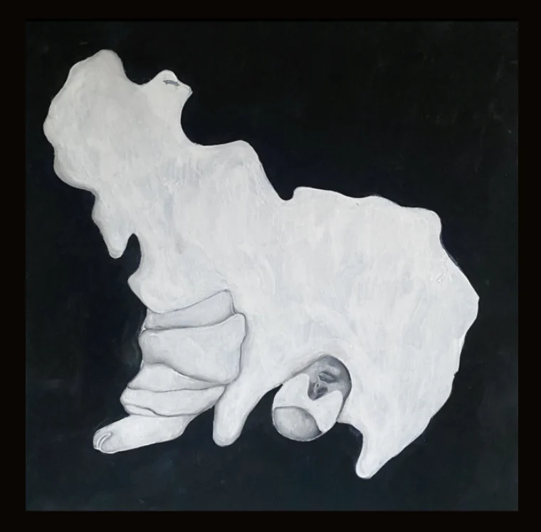

Malerei — Acryl
Der weiße Schuh
2024 · Acryl auf Leinwand · 40 × 40 cm
Eine helle, organisch geschwungene Form vor schwarzem Grund, in der sich Gewand und liegende Figur ineinander auflösen.
Anfrage senden
Veronika Horytska
2024 · Acryl auf Leinwand · 40 × 40 cm
Eine helle, organisch geschwungene Form vor schwarzem Grund, in der sich Gewand und liegende Figur ineinander auflösen.
Anfrage senden